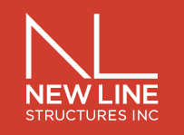

“IC Progress has been providing us with an excellent record for the progress of our project. Their online software is very user friendly and provides quick access to the photographic record of the project. We are able to use these photos in our reports to the client and it provides a seamless way to demonstrate how the project has progressed.
IC Progress is quick to help us with any concerns or questions we have regards to accessing or using their software. They are also very flexible when it comes to scheduling and have never missed a scheduled date to be on site. Overall, we find their service very valuable to our project and recommend them for yours.”
“We are able to take pictures each week from the same vantage point, pin them on the drawings, and monitor the construction progress. The program acts as an efficient photo cataloging tool. This is also a great tool which we share with our clients.
We are very likely to use this program on other projects moving forward.”
“It is my pleasure to recommend IC Progress as one of the most reliable firms in their industry.
A colleague introduced me to I.C. Progress last year when I needed specialized photos taken of a construction site. Since meeting with the owner and his team, I have been consistently impressed with the level of professionalism they use. We now regularly rely on their promptness and quality during all phases of construction. We have also begun working with them to show our finished spaces, for marketing purposes. The photos always turn out beautiful with the right color and image resolution.
Their electronic software is also incredibly organized and user friendly. The site allows you to view photos in a way that I have not seen before. It is a brilliant system.
As a company, we have been nothing but pleased working with I.C. Progress. I have already recommended them to others in my field, and will continue to do so in the future.”

“It is a privilege to be given the opportunity to provide a recommendation for IC Progress Photography. I have used IC Progress for two construction projects for the LIU Brooklyn Campus Capital Projects Department for construction progress photography and documentation.
Our department has begun to seeking photography documentation services after experiencing issues with the performance of work performed by general contractors that were procured by the university. In addition, such services were beneficial for university archival & recordkeeping. Other documentation firms fail to document or label photos that were taken on the field and lack the resources to pin documentation photos to an electronic construction document. We have engaged IC Progress photography for these particular services and are extremely satisfied customers. Compared to other firms we have worked with, IC Progress will take the time to meet and exceed the needs and expectations of our university senior administration. We look forward to appointing IC Progress for future construction progress photography and documentation services for future university capital improvement projects. Feel free to contact me if you have any questions regarding this recommendation.”“Compared to other firms, IC Progress will take the time to meet and exceed the needs and expectations of our university senior administration. We look forward to appointing IC Progress for future construction progress photography and documentation services for future university capital improvement projects.”
Michael Ng, Capital Projects Project Manager & Environmental Health and Safety Manger @LIU Brooklyn